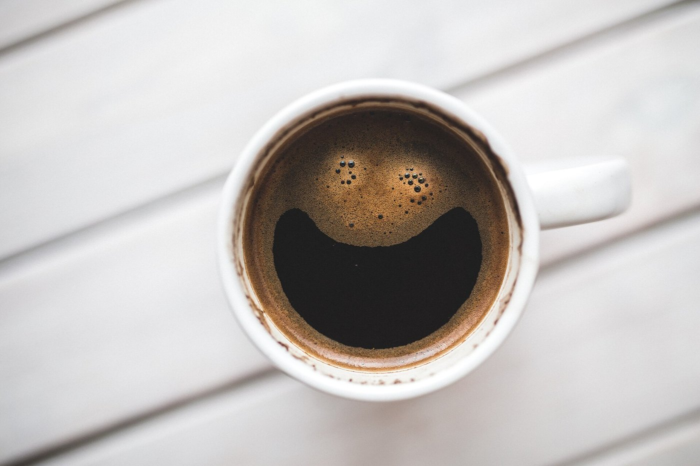
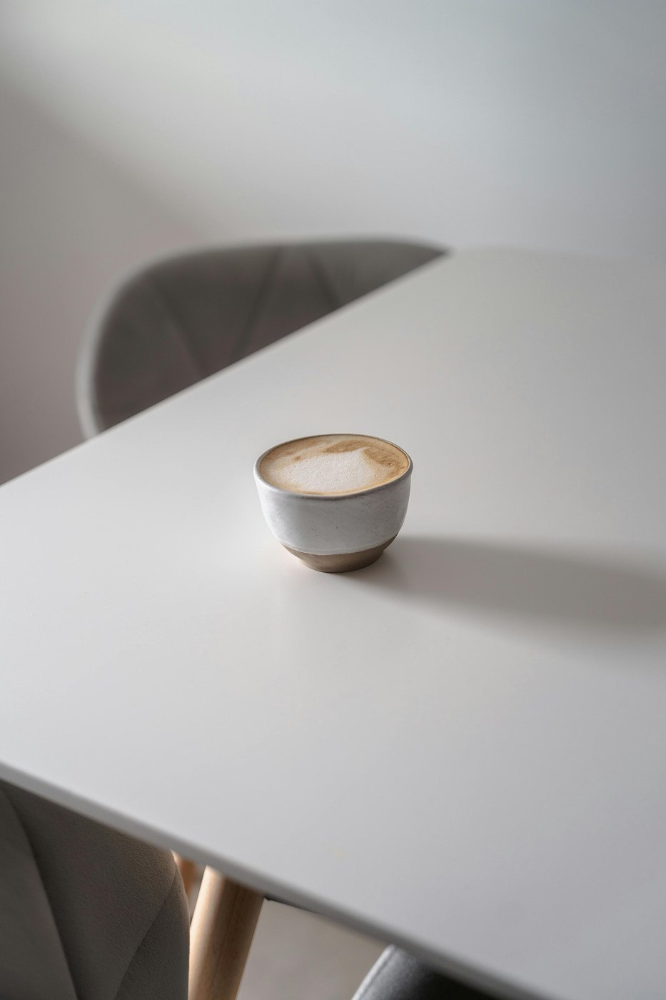
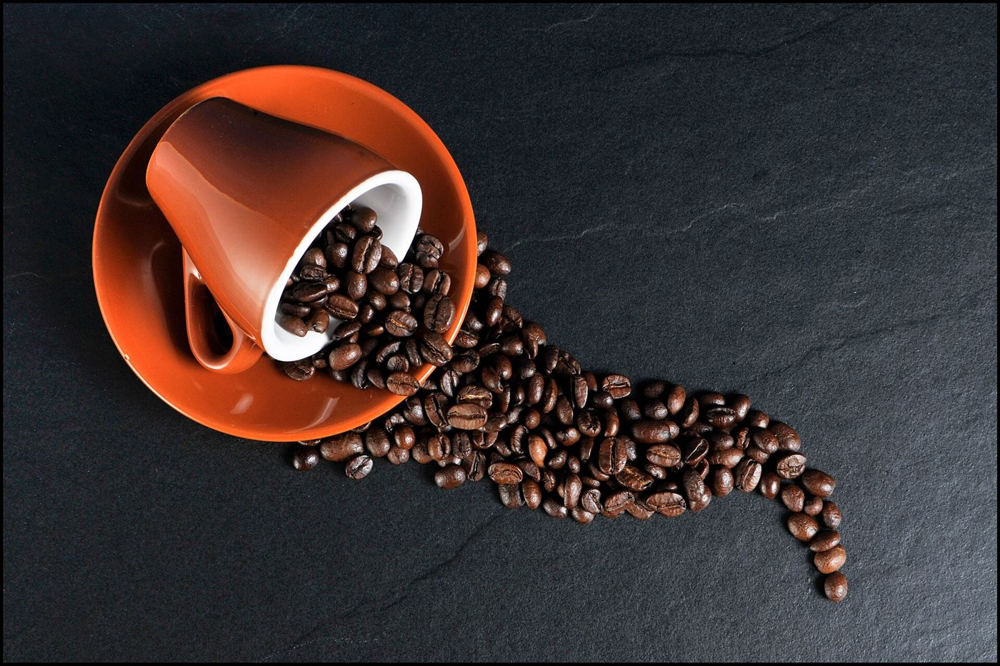

ノズル
熱風が出ていく先端の筒。先の形で、風の当たる広さが変わる。
店のこと
所在地とInstagramのほかは、詳しい情報を準備中です。
所在地
〒817-0023
長崎県対馬市厳原町田渕808
営業時間・メニュー・ご予約・駐車場などは準備中です。分かり次第、こちらに載せます。
制作側の連想
トップの図に出てくる、ヒートガンの六つの部位をカードにしました。制作側の連想で、お店の理念・由来とは無関係です。
熱風が出ていく先端の筒。先の形で、風の当たる広さが変わる。
本体の内側で、通る空気を温めるコイルのある場所。
本体の後ろで、空気を取り込む網目状の部分。
風の温度や強さを切り替えるための、回すつまみ。
握って持つ柄の部分と、指でオンとオフを切り替えるスイッチ。
柄の下から伸びて、本体に電気を送る線。
ギャラリー(イメージ)




写真はコーヒーのイメージです。お店のものではありません。